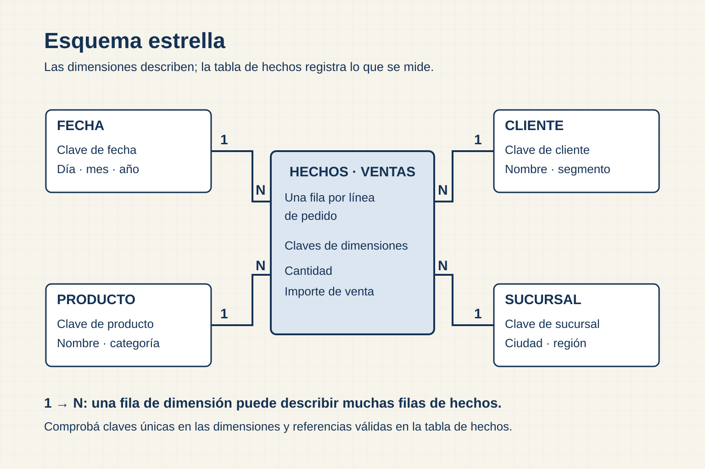

Separar preparación, significado y comunicación
Un proyecto de Power BI combina tres capas con responsabilidades distintas. Power Query conecta fuentes y prepara las tablas que ingresan al modelo. El modelo semántico define relaciones, medidas, nombres y formatos compartidos. El reporte organiza visuales y filtros para una audiencia.
Separar estas capas facilita revisar el resultado. Una regla que limpia un tipo pertenece a la preparación; una fórmula que calcula margen pertenece al modelo; un color que señala una meta pertenece al reporte. Mezclar las tres decisiones en pasos aislados vuelve difícil localizar un error y reutilizar una métrica.
En esta unidad Power Query recibe marts que ya atravesaron el pipeline. Puede ajustar nombres, tipos o carga, pero no debe reconstruir silenciosamente reglas que deberían vivir en staging o en el mart. La pregunta de control es: ¿esta transformación prepara el consumo o redefine el negocio?
Caso aplicado: una carpeta recurrente
Power Query también puede aplicar la misma secuencia sobre una carpeta. El caso complementario detecta cinco archivos, verifica el esquema, combina los cuatro válidos y conserva el nombre de origen. Las reglas separan la tabla curada del registro de rechazos antes de cargar el resultado.
Al actualizar, la consulta vuelve a leer los archivos disponibles. La reconciliación confirma 32 filas recibidas en archivos válidos, cuatro registros rechazados y 28 movimientos curados. El modelo semántico consume la tabla curada, mientras que el registro de calidad permanece disponible para explicar qué quedó fuera.
Organizar el modelo como un esquema estrella
Un esquema estrella coloca una tabla de hechos en el centro y la conecta con dimensiones. La tabla de hechos conserva observaciones medibles en un grano estable, como una fila por línea de pedido. Las dimensiones describen clientes, productos, fechas o regiones mediante claves únicas.

Las relaciones suelen ir de una dimensión hacia la tabla de hechos con cardinalidad uno a muchos. Al filtrar una región, la dimensión identifica las claves correspondientes y el filtro llega a las filas de hechos. Las medidas suman, cuentan o calculan ratios sobre esa población.
Esta estructura reduce ambigüedad y favorece medidas reutilizables. También mejora la lectura: una dimensión responde “por qué atributo segmentamos” y el hecho responde “qué ocurrió y cuánto”. La ventaja depende de que el grano y las claves se hayan declarado antes.
Verificar una relación antes de crearla
El lado “uno” necesita una clave única. El lado “muchos” puede repetirla en cada observación relacionada. Ambos campos deben tener tipos compatibles y las claves de hechos deberían encontrar su dimensión, salvo excepciones documentadas.
Antes de aceptar una relación comprobamos unicidad, nulos, claves huérfanas y cardinalidad esperada. La autodetección de Power BI puede sugerir un vínculo por nombres o valores, pero no conoce el contrato del negocio. La revisión confirma que customer_id conecta la dimensión de clientes con pedidos y que la dirección de filtro coincide con el uso previsto.
Una relación incorrecta puede ocultar filas o producir resultados ambiguos. El control se realiza con conteos y medidas conocidas antes de diseñar visuales. La documentación oficial de relaciones ofrece las opciones disponibles; el modelo del caso determina cuál corresponde.
Comprender la dirección de filtro
La dirección simple desde dimensión hacia hecho suele ofrecer el comportamiento más predecible. Un filtro de producto afecta las ventas relacionadas y no modifica automáticamente otras dimensiones. El recorrido puede explicarse de forma directa.
Las tres capas de un proyecto de Power BI
Pregunta de lectura¿En qué capa conviene corregir un tipo, una relación, una medida o una codificación visual?
Power Query
Responsabilidad
Conectar, tipar, limpiar y combinar.
Producto
Tablas listas para cargar.
Error típico
fecha como texto o duplicado en origen.
Revisar
pasos aplicados y consulta fuente.
Modelo semántico
Responsabilidad
Relaciones, dimensiones y medidas.
Producto
Definiciones reutilizables.
Error típico
cardinalidad ambigua o DAX incorrecto.
Revisar
grano, dirección de filtro y medida.
Reporte
Responsabilidad
Visuales, filtros y recorrido.
Producto
Página para decidir.
Error típico
escala o color que induce una lectura.
Revisar
pregunta, audiencia y codificación.
Cada capa tiene una responsabilidad distinta. Resolver el problema en su origen evita trasladar tipos incorrectos al modelo, relaciones ambiguas a DAX o definiciones inconsistentes a cada visual.
- 01
Power Query conecta fuentes y aplica transformaciones reproducibles sobre tablas.
- 02
El modelo semántico organiza relaciones, dimensiones y medidas reutilizables.
- 03
El reporte presenta visuales, segmentadores y navegación para una audiencia.
- 04
Un error se diagnostica en la primera capa donde aparece: tipo, cardinalidad, DAX o codificación visual.
La dirección bidireccional permite que el filtro viaje en ambos sentidos. Puede resolver escenarios específicos, pero también crear rutas ambiguas o propagar selecciones inesperadas. Activarla para “hacer que un gráfico funcione” puede esconder un problema de modelado.
Cuando el análisis necesita un comportamiento especial, primero se formula la pregunta y se revisan las relaciones. La elección queda documentada y se prueba con valores conocidos.
Distinguir una columna calculada de una medida
Una columna calculada se evalúa para cada fila cuando se procesa el modelo y su resultado se almacena. Sirve para clasificaciones, etiquetas o claves derivadas que luego participan en relaciones o filtros. Aumenta el tamaño del modelo porque conserva un valor por observación.
Una medida se evalúa cuando un visual la solicita. El resultado cambia según filtros, segmentadores y relaciones. “Ventas Netas USD” puede mostrar el total general, una región o un mes con la misma fórmula porque el contexto selecciona filas diferentes.
La elección depende del propósito. Una banda de demora estable por pedido puede expresarse como columna; un margen porcentual que debe responder a filtros conviene como medida. La guía oficial de medidas muestra cómo se crean y utilizan.
El contexto de filtro cambia el resultado
El contexto de filtro reúne las selecciones activas en el visual, la página y el reporte, además de las relaciones del modelo. Una barra por región evalúa la medida una vez para cada región. Una tarjeta sin ese eje evalúa el total de la población visible.
Cómo se evalúa una medida dentro del contexto de filtro
Pregunta de lectura¿Por qué una misma fórmula devuelve resultados distintos en cada visual?
MEDIDA · SE EVALÚA AL CONSULTAR
Contexto
Segmentadores de región y familia filtran dimensiones y hechos.
[Ventas] = SUM(fact_ventas[importe])Tres consultas
Sin filtro → total general
Región = Patagonia → subtotal
Familia = Bombas → subtotal
Intersección
Patagonia + Bombas conserva solo filas que cumplen ambos filtros.
COLUMNA CALCULADA · SE ALMACENA POR FILA
Cálculo
importe = cantidad × precio
fact_ventas[importe]Persistencia
Cada fila conserva su resultado hasta la próxima actualización.
Uso
La medida agrega la columna dentro del contexto actual.
La medida conserva una definición y se evalúa sobre las filas visibles en cada contexto. Una columna calculada se obtiene por fila durante la actualización y queda almacenada en el modelo.
- 01
Los segmentadores establecen filtros sobre dimensiones como región y familia.
- 02
Las relaciones llevan esos filtros hasta las filas correspondientes de fact_ventas.
- 03
[Ventas] = SUM(fact_ventas[importe]) se vuelve a evaluar para total, Patagonia y Bombas.
- 04
La columna calculada guarda un valor por fila; la medida responde a la consulta del visual.
Esto explica por qué una fórmula sencilla puede producir muchos resultados. También obliga a revisar denominadores. Si OTIF se calcula sobre pedidos elegibles, el filtro debe afectar numerador y denominador de manera coherente. Un filtro de transportista puede excluir pedidos sin asignación y cambiar la población.
Para depurar una medida conviene construir una tabla temporal con dimensiones y componentes del cálculo. Ver numerador, denominador y conteos ayuda a identificar qué filtro llega a cada parte.
Medidas DAX iniciales
DAX expresa cálculos sobre el modelo semántico. Las primeras medidas pueden escribirse de forma directa:
Ventas Netas USD =
SUM ( mart_ventas[net_sales_usd] )Margen Bruto USD =
SUM ( mart_ventas[gross_margin_usd] )Margen % =
DIVIDE ( [Margen Bruto USD], [Ventas Netas USD] )Pedidos =
DISTINCTCOUNT ( mart_ventas[order_id] )SUM agrega una columna aditiva dentro del contexto. DISTINCTCOUNT reconoce que order_id puede repetirse en varias líneas. DIVIDE controla el caso en que el denominador sea cero y hace visible que el porcentaje se calcula como ratio de totales.
OTIF requiere mayor cuidado:
OTIF % =
DIVIDE (
CALCULATE (
DISTINCTCOUNT ( mart_entregas[order_id] ),
mart_entregas[otif_flag] = 1
),
DISTINCTCOUNT ( mart_entregas[order_id] )
)CALCULATE agrega la condición del numerador. La medida solo es válida si mart_entregas tiene el grano y la elegibilidad declarados. Si existen varias filas por pedido, el conteo distinto evita repetirlos, pero todavía debemos comprobar qué pedidos integran el denominador.
Nombres y formatos forman parte del significado
Un modelo orientado a usuarios utiliza nombres legibles, unidades y formatos coherentes. “Margen %” comunica mejor que “gm_pct_v2”; una descripción puede indicar fuente y definición. Las claves técnicas que no deben usarse se ocultan y las medidas se organizan en carpetas.
El formato visual no corrige una fórmula. Mostrar 0,823 como 82,3 % ayuda a leer, pero el valor debe haberse calculado con el denominador correcto. Monedas y fechas también necesitan unidades y contexto.
Estas decisiones reducen la distancia entre la tabla técnica y la pregunta. Una persona que explora el modelo puede elegir campos autorizados sin reconstruir la lógica desde cada visual.
Una página debe responder una pregunta
La página comienza con un título que expresa la decisión o el hallazgo. Un KPI principal muestra valor y referencia. Una comparación revela dónde se concentra la diferencia; un desglose explica qué segmento merece atención; los filtros necesarios permiten explorar sin cambiar la definición.
La recomendación o alerta aparece cerca de la evidencia que la sostiene. Fuente y actualización permanecen visibles. Si la audiencia necesita detalle, una tabla secundaria o una página de respaldo puede ofrecerlo.
Un mosaico de visuales obliga a descubrir el argumento por cuenta propia. Diseñar una jerarquía permite leer primero la situación, luego la comparación y finalmente la acción.
Elegir visuales dentro de Power BI
Las reglas de selección visual se mantienen dentro de la herramienta. Las barras comparan categorías, las líneas muestran secuencias temporales y una dispersión explora relaciones. La interacción aporta valor cuando responde una pregunta secundaria y conserva la población.
Antes de agregar un visual conviene formular qué tarea cumple. Si otra figura ya responde la misma pregunta, puede quitarse. Menos elementos bien explicados facilitan controlar filtros y detectar contradicciones.
Reconciliar el modelo con los marts
La carga se valida con filas importadas, claves distintas, rango de fechas y totales. Ventas, margen y pedidos se comparan con el mart o con el notebook de control. OTIF se revisa mediante numerador y denominador.
Una visual puede parecer coherente y aun así ocultar una relación inactiva o un filtro inesperado. La reconciliación utiliza valores conocidos antes de analizar segmentos. Si el total coincide y una región difiere, el diagnóstico se concentra en relaciones, categorías o filtros.
El registro de control conserva fecha, versión de fuente y valores comparados. Así otro estudiante puede repetir la verificación después de actualizar.
Acceso a Power BI Desktop desde distintos equipos
La documentación vigente de Microsoft indica que Power BI Desktop requiere Windows. Una persona que utiliza macOS puede revisar fuentes, modelo, fórmulas y narrativa, y necesita acceso a un equipo Windows para abrir o modificar el archivo PBIX con Desktop.
La práctica puede resolverse individualmente o en equipo. Cuando se comparte un dispositivo, cada integrante conserva una copia de los datos y debe poder explicar las relaciones, las medidas y los controles. La organización del trabajo debe evitar que el sistema operativo convierta la parte técnica en una caja negra para quien no ejecutó el archivo.
Revisar sugerencias de IA en BI
Un asistente puede proponer DAX, recomendar un visual o resumir una página. La revisión comprueba nombres de tablas y columnas, contexto de filtro, denominador, dirección de relaciones y seguridad de los datos.
Una medida puede ser sintácticamente válida y responder otra pregunta. Por ejemplo, promediar porcentajes por fila produce un resultado distinto del ratio entre sumas. El control debe comparar componentes con una consulta o notebook conocido.
La versión final registra qué sugerencia se utilizó y qué prueba la validó. El modelo semántico queda bajo responsabilidad de la persona o equipo que lo publica.
Preguntas de comprobación
- ¿Qué transformaciones corresponden a Power Query y cuáles deberían llegar resueltas?
- ¿Qué condición debe cumplir la clave del lado “uno”?
- ¿Por qué una medida cambia cuando se filtra una región?
- ¿Cuándo conviene crear una columna calculada?
- ¿Cómo se validan numerador y denominador de OTIF?
- ¿Qué visual puede retirarse sin perder evidencia?
- ¿Cómo se documenta una relación bidireccional si fuera necesaria?
Alcance de la unidad
La unidad cubre importación, tipos, esquema estrella, relaciones simples, medidas, contexto de filtro, página de decisión y reconciliación. DAX avanzado, seguridad por filas, actualización incremental, gateways, Fabric y administración del servicio quedan como extensiones posteriores.